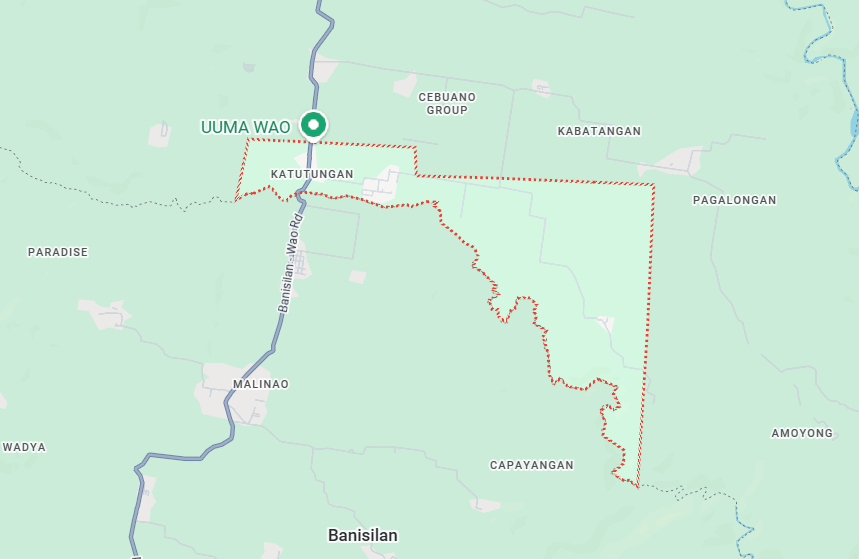

Our Services
Quality, accessible, and transparent public services for every resident of Barangay Katutungan.
- Barangay Clearance
Official document for job applications, business permits, and identification.
- Certificate of Residency
Proof of residency for local requirements and verification.
- Business Clearance
Permit to legally operate a business within the barangay.
- Indigency Certificate
For financial assistance, scholarships, or medical aid.
- Blotter Report
Official mediation and dispute resolution services.
- Community Programs
Livelihood, youth, agricultural, and cultural programs.
- Disaster Response
Emergency rescue, relief distribution, and disaster readiness.
- Health Services
Medical checkups, immunizations, and maternal care.
Barangay Office Hours
Monday – Friday, 8:00 AM – 5:00 PM
Monday – Friday, 8:00 AM – 5:00 PM
Contact Information
Have questions or need assistance? Reach out to us through any of our channels below.
Phone Number
(000) 000-0000
(000) 000-0000
Email Address
barangaykatutungan@email.com
barangaykatutungan@email.com
Facebook Page
Barangay Katutungan Official
Barangay Katutungan Official
Barangay Hall Location

Map caption: Central location of the Barangay Hall of Katutungan.